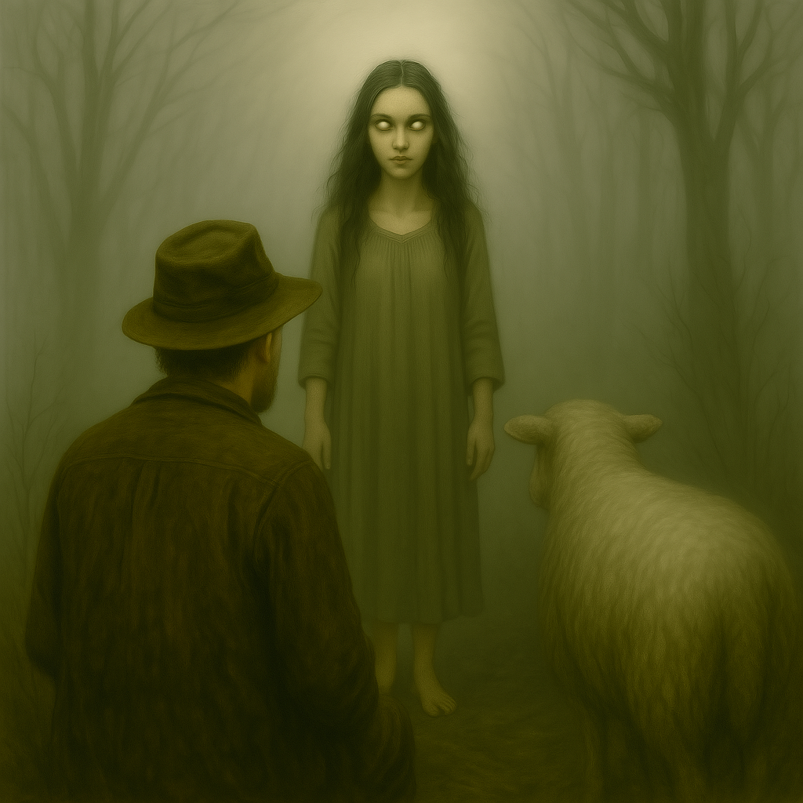

U selu Bistrica, kraj Petrovca na Mlavi, reka više ne teče samo kroz kamen i trsku — već i kroz priče koje šapuću o onome što se ne vidi. Meštani već decenijama izbegavaju da prelaze mostove posle ponoći. Ne zato što su sujeverni, već zato što su neki pokušali — i vratili se drugačiji.
Najpoznatija priča vezana je za starog vodeničara koji je, u zoru, vodio stoku na pijacu. Na mostu ga je zaustavila svadba — vesela, sa muzikom i rakijom. Ali kad je nazdravio sa kumom, čaša se pretvorila u konjsku glavu. Svadba je nestala. A on je, kažu, do kraja života govorio tiho i gledao preko ramena.
Drugi su čuli korake iza sebe, ali nikad nisu videli nikoga. Psi laju bez razloga, a konji odbijaju da pređu most. Neki tvrde da se u vodi, kad je mesec pun, vidi lice koje nije ljudsko.
Bistričani kažu da most nije uklet — već upozoren. I da onaj ko ne veruje, neka prođe sam, bez reči, kad sat otkuca ponoć. Ako se vrati isti, možda će i poverovati.
Mile, tada 26-godišnjak, vraćao se iz susednog sela kasno uveče,
prečicom kroz šumu. Bio je januar, sneg do kolena, a mesec pun.
Na proplanku zvanom „Kamenita kosa“, čuo je muziku — frula, zurle, smeh.
Pomislio je da neko slavi, iako je bilo čudno što se to dešava usred šume.
Ispred njega, iz magle, pojavila se svadbena povorka.
Ljudi u starinskoj nošnji, konji, mlada pod velom...
Ali svi su imali crne oči bez zenica i kožu kao vosak.
Jedan od svatova mu je prišao i rekao:
„Dođi, Mile, čeka te mesto za stolom.“
Nije mu bilo jasno kako znaju njegovo ime.
Krenuo je da beži, ali noge ga nisu slušale — kao da hoda kroz vodu.
U tom trenutku setio se saveta pokojne bake:
„Ako vidiš svatove bez senke — ne gledaj ih u oči i ne odgovaraj.“
Zatvorio je oči, prekrstio se i počeo da izgovara Očenaš.
Kada ih je ponovo otvorio — bio je sam.
Na mestu gde su stajali svatovi, sneg je bio istopljen,
a u sredini je ležao venčani veo — crn kao pepeo.
Mile je narednih mesec dana imao visoku temperaturu.
Nije govorio i tvrdio je da mu noću neko šapuće kroz zidove.
Tek nakon što je veo spaljen u crkvenom dvorištu, stanje mu se popravilo.
Bio je januar, „nekršteni dani“, kako ih zovu u selu kraj Sokobanje. Snežna tišina, bez vetra, bez pasa. Miloš, tada mladić od 23 godine, vraćao se iz kafane oko dva ujutru. Bio je pripit, ali priseban. Putem kroz šumu, tik uz reku, osetio je da ga neko prati. Okrenuo se — ništa.
U sledećem trenutku, nešto mu je skočilo na leđa. Nije video šta, ali je osetio težinu, kandže koje su mu se zarile u ramena i dah koji je mirisao na mokrog psa. Noge su mu se pokrenule same. Trčao je, bez daha, bez kontrole, kroz sneg, kroz granje, dok mu se u ušima nije začuo smeh — ženski, ali hrapav, kao da dolazi iz bunara.
Kaže da je trčao dok nije zapevao prvi petao. Tada je pao. Ležao je u snegu, krvavih leđa, bez jakne. Nije znao gde je. Sutradan su ga našli meštani, promrzao, ali živ. Na leđima — četiri ogrebotine, duboke i pravilne, kao od kandži. Lekar je rekao: „Mačka? Ili nešto veće.“
Miloš više nikada nije pio u „nekrštene dane“. A kad ga pitaju šta ga je uzjahalo te noći, samo kaže: „Ne pitaj. Nosi još.“
Bilo je leto 1996. godine, u selu Jabuka, iznad Prijepolja. Stariji meštani su već tada govorili da se u šumi iznad sela „čuje nešto što nije od ovog sveta“. Ali niko nije hteo da o tome javno priča — osim Milorada, tada čuvara šumskog gazdinstva.
Jedne noći, dok je obilazio teren, čuo je krik. Ne kao vuk, ni kao sova — već kao dete koje plače, pa se smeh pretvori u zavijanje. Zaledio se. Onda je video oči — dve svetle tačke, nisko pri zemlji, ali koje su se kretale kao da lebde. Kad je posvetlio baterijom, nije video ništa. Ali krik se ponovio, sada iza njegovih leđa.
Pokušao je da pobegne, ali mu je nešto skočilo na leđa. Nije video šta, ali je osetio kandže koje su mu se zarile u ramena. Trčao je, bez daha, dok nije pao niz padinu. Kad su ga našli ujutru, imao je ogrebotine po leđima i bio je u šoku. Nije govorio tri dana.
Kasnije je rekao samo jedno: „To nije bila životinja. To je bilo nešto što zna gde si slab.“
Od tada, meštani Jabuke ne ulaze u šumu noću. A kad se čuje krik, kažu: „To drekavac traži onog ko se ne krsti kad prolazi.“
Na obroncima planine Rtanj, iznad sela Planinica, nalazi se usamljeni kamen u obliku polumeseca, zariven u zemlju. Meštani ga zovu „Vilin prag“. Kažu da se oko njega trava nikada ne prima, i da je zemlja uvek blago topla — čak i zimi.
Prema predanju, jedne noći 1932. godine, pastir po imenu Radoje izgubio je jedno jare. U potrazi, popeo se do kamena i zatekao prizor koji nikada nije zaboravio: tri ženska lika, bleda kao mesečina, igrala su u krug, ne dodirujući tlo. Njihova kosa bila je duga i raspuštena, a iz pokreta su se čuli zvuci nalik na vetar kroz trsku. Kad je pokušao da im priđe, telo mu je obamrlo, a sledeće čega se sećao bilo je da se budi pored stada — bez jareta, ali sa kamenom u ruci koji nikada ranije nije video.
Taj kamen je kasnije zakopan ispod praga njegove kuće, jer su mu stariji rekli: „Ako si video vile, moraš im ostaviti put da te ne traže.“
Do danas, meštani Planinice ne zalaze do tog kamena noću. Kažu da se ponekad, kad je tišina potpuna, čuje pesma bez reči — i da se trava oko kamena blago talasa, iako nema vetra.
Vile su među najtajanstvenijim bićima iz narodnog predanja — neuhvatljive, nepredvidive, često skrivene između svetlosti i senke.
Mogu biti surove prema onima koji naruše njihovu tišinu, ali i nežne čuvarice izgubljenih.
Kažu da ponekad, u praskozorje, ostave tragove — pletenice u grivi konja, svežu travu u krug oko drveta gde su igrale svoje kolo.
Ponekad mogu biti i dobre — one su sile prirode u svom najlepšem i najopasnijem obliku.
Zato zaslužuju više od usputnog pominjanja. Zaslužuju svoje priče. I evo ih.
„Pazi, ne diraj pletenice. To vile pletu kad biraju koga neće da povredi oluja.“
Leto 1986., selo Gornja Kozica, tik uz šumu koja se penje uz Radan.
Gospodin M., tada mladi konjar, često je ostavljao svoje grlo, tamnog dorata imena Gvozden, da prespava u ograđenom delu voćnjaka pod otvorenim nebom. Jedne večeri, dok su zvezde bile oštre kao igle i mesec u prvoj četvrti, čuo je konja kako blago uzdiše, ali se ne meškolji, ne buni. Tišina je bila previše tiha.
Ujutru je našao Gvozdena kako stoji mirno, ali mu je griva bila ispletena u tri tanke pletenice, svaka savršeno čvrsta, vezana u čvorić kakav niko od ukućana nije znao da napravi. Rep je takođe bio uvijen u spiralu, a na zemlji, oko kopita, cveće iz obližnje šume — još sveže, iako ga tu nema u toj sezoni.
Stari komšija, koji je nekada držao stado konja u dolini, samo je rekao:
„Pazi, ne diraj pletenice. To vile pletu kad biraju koga neće da povredi oluja. Ako ih razvežeš — Gvozden više neće jesti.“
Gvozden je naredne tri noći ostajao sam na istom mestu. I svako jutro — nova pletenica, drugačija od prethodne. Četvrte noći, mesečine nije bilo. I od tada — više nikada nijedna pletenica. Ali, svake godine u isto vreme, na tom mestu nikne nekoliko stabljika cveća koje niko nikada nije posadio.
Kažu da se u izmaglici između Zaječara i Bora pojavljuje mlada u venčanici. Ne hoda — lebdi. Ne gleda — traži. A kada ti uđe u kola, osetiš hladnoću koja ne dolazi od tela već od duše.
1996. godine, jedan vozač je povezao devojku u belom. Njena torbica ostala je na zadnjem sedištu. Unutra: umrlica iz šezdesetih i slika mlade na dan venčanja. Na kojoj je pisalo ime — i datum smrti.
„Stalo je srce, ne sat. Vraćam se dok ne dočekam.“
Kažu da u Zlom Dolu, između sela Vučje i Gradište, stanuje omaja koja ne šapuće — već peva. Njen glas se čuje samo kad je magla gusta kao mleko, a putnik sam.
Jedne jeseni, mladi pastir po imenu Stevan izgubio je ovcu. Pratio je tragove kroz šiblje, sve dok nije čuo pesmu — nežnu, ali bez reči. Ispred njega stajala je devojka bosa, sa raspletenom kosom i očima koje nisu imale zenice.
„Vratiću ti ovcu,“ rekla je, „ali moraš da kažeš svoje ime.“ Stevan je ćutao. Baka mu je govorila: „Ako omaji kažeš ime — više nisi svoj.“
Devojka je nestala. Ovca se vratila sama. Ali Stevan više nikada nije govorio. Samo je sedeo ispod drveta i pevušio pesmu bez reči.
I danas, kad magla padne u Zlom Dolu, čuje se glas. Ne traži pomoć. Traži ime.

Groblje u selu Donji Potok bilo je napušteno već decenijama. Kamenje porušeno, stabla porasla između krstova, i samo jedna staza još uvek vodi do vrha brda. Kažu da je tamo sahranjena žena koju niko nije hteo da imenuje. Zvali su je samo ona s tamnom maramom.
Pošao sam gore sam, tokom zalaska sunca, da obiđem dedin grob. Imao sam baterijsku lampu, stari upaljač i sitni nož — ni sam ne znam zašto. Na groblju je tiho, ali ne prirodno tiho. Kao da neko sluša tišinu sa druge strane kamena.
Kad sam se naslonio na jedan oboren spomenik, začulo se lomljenje grančice iza mene. Kad sam se okrenuo — ništa. Ali... kamen na kome sam stajao nije imao natpis. Samo brazde, duboko urezane krugove, kao nokti što grebu mermer.
I tada — hladan dah na uhu. A zatim — ženski glas, suv, bez daha:
„Znaš li čiji si kamen zgazio?“
Okrenuo sam se brzo, refleksno, i video — ne osobu. Ne senku. Crnu tkaninu, kao veo, kako visi u vazduhu na visini lica. Ispod nje — ništa. A oko toga — vazduh drugačiji, zamagljen.
Pokušao sam da se pomerim, ali noge kao prikovane. Ruke ledene. Samo oči se pomeraju. A tada — njena ruka. Izašla je iz vela. Predugačka, tanka, sa kožom tamnijom od noći. Dodirnula mi grudi i rekla:
„Hoćeš li da ponesem tvoje disanje?“
U tom trenutku, ne znam da li sam pao ili sam se bacio — ali sledeće čega se sećam jeste da sam se probudio na podu ispred groblja, sav blatnjav, sa ogrebotinom preko grudi. Kao prstima ucrtan krug. Nije krvarilo, ali je peklo kao žig.
Vratio sam se sutradan — ali kamen više nije bio tu. Zemlja ravna, kao da nikada ništa nije tu bilo. Samo jedan crni cvet u sredini. I dan-danas, kad god uđem u hladovinu, učini mi se da čujem kako neko izgovara:
„Znaš li gde si stajao?“
Bila je oko 2:40 posle ponoći. Vozač R.L. vraćao se iz Niša ka Paraćinu starim putem, zbog radova na auto-putu. Bio je mrak, slab signal, samo pozadinsko brujanje motora i kišica koja je pravila „šu-šu-šu“ preko šoferke. Znao je taj put napamet — i znao je da treba da uspori kod „krivine kod starog hrasta“, gde je, kako kaže, "uvek bilo nešto teško u vazduhu."
Tad je spazio čoveka pored puta. Sam, promrzao, u sivom mantilu i cipelama koje su više ličile na vojničke. Nije mu bilo ni pravo, ali savest je učinila svoje. Zaustavio je kamion.
– „Treba li ti prevoz, buraz?“
Čovek je klimnuo i ušao. Seo na suvozačko mesto i ćutao. Nije čak ni zatvorio vrata rukom — vrata su se sama zalupila.
– „Gde ideš?“
– „Nazad,“ reče. Suvo. Oštro. I okrenu glavu ka prozoru.
U tom trenutku, kroz retrovizor, vozač je video nešto što ga je sledilo: šaka saputnika nije imala nokte, samo dugačke prste. Koža tamna, kao predugo potopljena u vodi. A najgore — kad je pokušao da mu pogleda lice... nije ga bilo. Samo glatka površina, kao vosak bez crta.
Srce mu je preskočilo. Vozilo je počelo da vibrira, kao da se puni strujom.
– „Ovde sam poginuo.“
R.L. je zgrabio kočnicu, izbacio iz brzine i zablokirao na putu. Kad se okrenuo da ga pogleda — niko nije sedeo pored njega. Vrata zatvorena. Staklo nije bilo orošeno. Kao da tamo niko nikada nije sedeo.
Ušao je u prvi kafić-trafiku kod Bobova i rekao vlasniku šta se desilo.
Čovek za šankom samo je klimnuo:
– „Tu ti je poginuo jedan momak pre tri zime. Sive cipele, vojni mantil. Niko ga nije prepoznao. Još ga zovu vozači. Svrati na 'prevoz' kad je kiša i kad se neko sam oseća u kabini.“